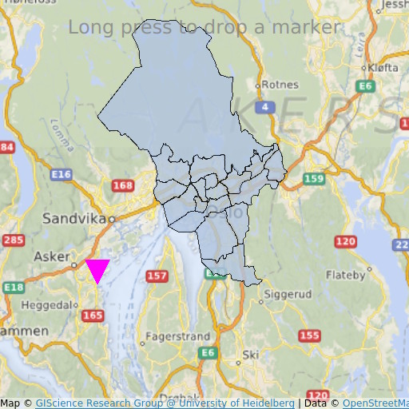

MapItemView Transitions (QML)
How to use transitions together with MapItemView.

MapItemView Transitions demonstrates how to use the Map item to render a map. It shows the minimum amount of code needed to display the map, and can be used as a basis for further experimentation.
Running the Example
To run the example from Qt Creator, open the Welcome mode and select the example from Examples. For more information, visit Building and Running an Example.
QML Code
In main.qml, two MapItemView elements are used, to add to the map the administrative districts for the Oslo region, and to add a marker upon long-press.
MapItemView { id: mivMarker add: Transition { NumberAnimation { property: "slideIn" from: 50 to: 0 duration: 500 easing.type: Easing.OutBounce easing.amplitude: 3.0 } } remove: Transition { NumberAnimation { property: "opacity" to: 0.1 duration: 50 } } model: ListModel { id: markerModel } delegate: Component { MapQuickItem { coordinate: QtPositioning.coordinate(latitude, longitude) anchorPoint: Qt.point(e1.width * 0.5, e1.height + slideIn) property real slideIn : 0 sourceItem: Shape { id: e1 vendorExtensionsEnabled: false width: 32 height: 32 visible: true transform: Scale { origin.y: e1.height * 0.5 yScale: -1 } ShapePath { id: c_sp1 strokeWidth: -1 fillColor: Qt.rgba(1,0,1,1.0) property real half: e1.width * 0.5 property real quarter: e1.width * 0.25 property point center: Qt.point(e1.x + e1.width * 0.5 , e1.y + e1.height * 0.5) property point top: Qt.point(center.x, center.y - half ) property point bottomLeft: Qt.point(center.x - half, center.y + half ) property point bottomRight: Qt.point(center.x + half, center.y + half ) startX: center.x; startY: center.y + half PathLine { x: c_sp1.bottomLeft.x; y: c_sp1.bottomLeft.y } PathLine { x: c_sp1.top.x; y: c_sp1.top.y } PathLine { x: c_sp1.bottomRight.x; y: c_sp1.bottomRight.y } PathLine { x: c_sp1.center.x; y: c_sp1.center.y + c_sp1.half } } } } } }
The marker view specifies both the add and the remove transition, to create a bouncing marker effect.
MapItemView { id: miv model: OsloListModel { id: osloListModel } add: Transition { NumberAnimation { property: "animationScale" from: 0.2 to: 1 duration: 800 easing.type: Easing.OutCubic } } delegate: Component { MapPolygon { function fromMercator(l, centroid) { var res = [] for (var i = 0; i < l.length; i++) { var vtx = l[i] var offset = Qt.point((vtx.x - centroid.x) * animationScale, (vtx.y - centroid.y) * animationScale) var pt = Qt.point(centroid.x + offset.x, centroid.y + offset.y) res.push( QtPositioning.mercatorToCoord(pt) ) } return res; } path: fromMercator(osloListModel.geometries[name+"_"+adminLevel] , osloListModel.centroids[name+"_"+adminLevel] ) color: ((adminLevel > 4) ? "lightsteelblue" : 'firebrick') property real animationScale : 1 opacity: ((adminLevel < 9) ? 0.1 : 0.8) visible: true } } }
The administrative districts view specifies only the add transition, to create a district growing effect.
Requirements
The example requires a working internet connection to download OpenStreetMap map tiles. An optional system proxy should be picked up automatically.